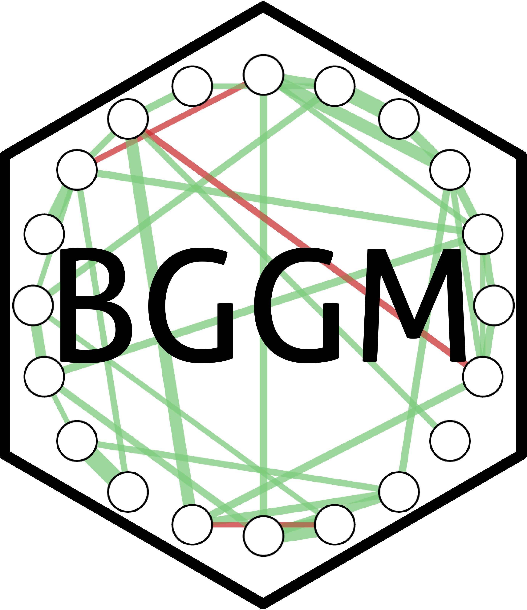

Model Predictions for var_estimate Objects
Source: R/predict.estimate.R
predict.var_estimate.RdModel Predictions for var_estimate Objects
Usage
# S3 method for class 'var_estimate'
predict(object, summary = TRUE, cred = 0.95, iter = NULL, progress = TRUE, ...)Arguments
- object
object of class
var_estimate- summary
summarize the posterior samples (defaults to
TRUE).- cred
credible interval used for summarizing
- iter
number of posterior samples (defaults to all in the object).
- progress
Logical. Should a progress bar be included (defaults to
TRUE) ?- ...
Currently ignored
Examples
# \donttest{
# data
Y <- subset(ifit, id == 1)[,-1]
# fit model with alias (var_estimate also works)
fit <- var_estimate(Y, progress = FALSE)
# fitted values
pred <- predict(fit, progress = FALSE)
# predicted values (1st outcome)
pred[,,1]
#> Post.mean Post.sd Cred.lb Cred.ub
#> [1,] 0.556993397 0.25260466 0.0655986749 1.050671049
#> [2,] 0.276032094 0.18547003 -0.0909131300 0.645220452
#> [3,] -0.075703824 0.33490167 -0.7352914192 0.577493741
#> [4,] -0.131959558 0.39421378 -0.9002412127 0.647618602
#> [5,] 0.147297627 0.34643821 -0.5354974690 0.830316171
#> [6,] 0.373837985 0.19418550 0.0002371995 0.759695354
#> [7,] 0.487066585 0.21067441 0.0634408225 0.903147482
#> [8,] 0.473151766 0.24919200 -0.0095708209 0.970682917
#> [9,] 0.353415983 0.21489011 -0.0637834523 0.771041868
#> [10,] 0.426971305 0.17839640 0.0731361808 0.776327690
#> [11,] -0.666594252 0.46110417 -1.5814236639 0.217816274
#> [12,] -0.558897034 0.43510006 -1.4043622887 0.276821406
#> [13,] 0.069375525 0.25522045 -0.4221454513 0.575389184
#> [14,] -0.388888764 0.38727390 -1.1438669803 0.397140995
#> [15,] 0.088292098 0.14438160 -0.1921821720 0.374154215
#> [16,] 0.232563265 0.20539028 -0.1743403165 0.634079530
#> [17,] 0.313025670 0.24742273 -0.1774230545 0.797174904
#> [18,] 0.198798855 0.29196186 -0.3728742870 0.765189452
#> [19,] 0.169134058 0.24766291 -0.3098407297 0.654734027
#> [20,] 0.165438709 0.22169464 -0.2712371231 0.606473090
#> [21,] -0.325089763 0.30743034 -0.9281808576 0.276931226
#> [22,] 0.215584746 0.16819850 -0.1141231216 0.550053790
#> [23,] 0.238758057 0.14423624 -0.0446466403 0.526730585
#> [24,] 0.096957943 0.35171279 -0.6094647884 0.777052606
#> [25,] 0.536902461 0.31149793 -0.0641778522 1.150111847
#> [26,] 0.201240069 0.22191389 -0.2273696240 0.627592257
#> [27,] 0.213368590 0.20059265 -0.1836047192 0.610005639
#> [28,] 0.126133267 0.15479752 -0.1799217489 0.426181235
#> [29,] 0.074807858 0.23266169 -0.3819387875 0.540190419
#> [30,] -0.228890260 0.20133689 -0.6342458759 0.161237684
#> [31,] 0.208580895 0.40573411 -0.5936433348 1.005812328
#> [32,] 0.037427683 0.19260227 -0.3386403828 0.414165146
#> [33,] -0.211556471 0.19333412 -0.5963713149 0.165979744
#> [34,] -0.013675985 0.18382450 -0.3691081559 0.343542312
#> [35,] -0.855531043 0.42810012 -1.6804274977 -0.008306406
#> [36,] -0.693238804 0.37810334 -1.4305288246 0.062910217
#> [37,] -0.685307600 0.44118117 -1.5670882897 0.197391558
#> [38,] -0.674795883 0.46975957 -1.5711973622 0.265508687
#> [39,] -0.283521137 0.34492154 -0.9606747892 0.412174013
#> [40,] 0.185507486 0.13265709 -0.0691632186 0.443754977
#> [41,] -0.182325747 0.19774531 -0.5738611839 0.207100769
#> [42,] -0.154648419 0.33493352 -0.8122062812 0.516642067
#> [43,] 0.013031773 0.24853438 -0.4644882955 0.509552962
#> [44,] 0.013558237 0.20316470 -0.3852163793 0.413510583
#> [45,] 0.073826559 0.27229943 -0.4682479433 0.607902053
#> [46,] 0.270973877 0.12266886 0.0288141579 0.515984065
#> [47,] 0.271042778 0.19979422 -0.1183827582 0.669150725
#> [48,] -0.310929897 0.38755645 -1.0645161016 0.467260301
#> [49,] 0.021539585 0.12600326 -0.2261179083 0.269102750
#> [50,] 0.068321039 0.22075958 -0.3627766948 0.515873553
#> [51,] 0.045634571 0.13996323 -0.2235939484 0.321028110
#> [52,] 0.165739414 0.15958834 -0.1464262460 0.477885267
#> [53,] 0.097832781 0.19168754 -0.2794639572 0.471972579
#> [54,] 0.165356798 0.20066470 -0.2307675985 0.560060371
#> [55,] 0.110156586 0.14970042 -0.1814839640 0.406546462
#> [56,] -0.012707091 0.18944239 -0.3898414394 0.365361891
#> [57,] 0.519579052 0.21090090 0.1048124694 0.941851852
#> [58,] 0.105608522 0.21956240 -0.3192070672 0.539864456
#> [59,] 0.274981923 0.38372473 -0.4868995649 1.010945728
#> [60,] 0.020090664 0.26112483 -0.4853659164 0.546757063
#> [61,] -0.054436452 0.28012129 -0.6300222790 0.492400998
#> [62,] -0.191117291 0.24576563 -0.6894095145 0.291985474
#> [63,] -0.155578380 0.22577859 -0.6072290017 0.283946920
#> [64,] 0.238432919 0.35325961 -0.4587858439 0.932592924
#> [65,] 0.098604219 0.40310771 -0.6916812664 0.898904049
#> [66,] 0.271131015 0.22226186 -0.1634546763 0.707321681
#> [67,] -0.357248762 0.30674303 -0.9570046746 0.244607281
#> [68,] 0.208654900 0.17010407 -0.1269464786 0.541325247
#> [69,] 0.148864356 0.24721468 -0.3378232058 0.626376966
#> [70,] -0.394828520 0.41772749 -1.1952768140 0.425642780
#> [71,] 0.064159274 0.24099847 -0.4155651456 0.528081712
#> [72,] -0.118979349 0.19167435 -0.4873503173 0.248441543
#> [73,] -0.119490056 0.20778768 -0.5340569494 0.280541005
#> [74,] -0.098497646 0.20239083 -0.4952910285 0.293805423
#> [75,] -0.157632139 0.16955971 -0.4949774903 0.171858039
#> [76,] -0.061651071 0.15332987 -0.3684496113 0.244180140
#> [77,] -0.179911308 0.13511417 -0.4445952137 0.089762095
#> [78,] -0.061373437 0.28202035 -0.6092575063 0.502117621
#> [79,] -0.486301856 0.38979022 -1.2562502259 0.285658099
#> [80,] 0.097927653 0.20963221 -0.3129924456 0.511014429
#> [81,] 0.005772897 0.09971398 -0.1882196797 0.204264120
#> [82,] -0.287282223 0.20968880 -0.7061117953 0.125242898
#> [83,] -0.437429259 0.37699113 -1.1786898247 0.313351872
#> [84,] 0.432550997 0.25891170 -0.0704165143 0.924706072
#> [85,] 0.204393318 0.20167234 -0.1852055328 0.598532702
#> [86,] 0.133698648 0.39644362 -0.6364720506 0.916878920
#> [87,] -0.197743828 0.17090726 -0.5319481362 0.136683367
#> [88,] -0.059258325 0.21761436 -0.4863624091 0.369576437
#> [89,] -0.290909769 0.21803079 -0.7172307013 0.138744551
#> [90,] 0.128972736 0.33845483 -0.5216735451 0.794624125
#> [91,] -0.229025406 0.32215462 -0.8668427232 0.393121183
#> [92,] -0.144364428 0.22325160 -0.5765485339 0.297690029
#> [93,] -0.263373820 0.28405173 -0.8280380811 0.279678221
# }